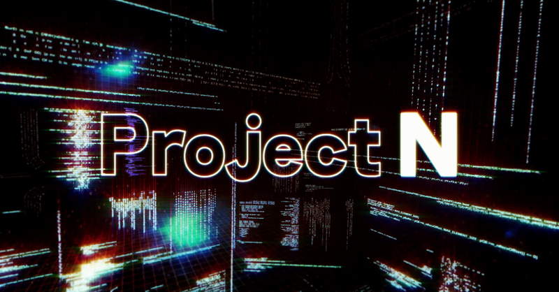
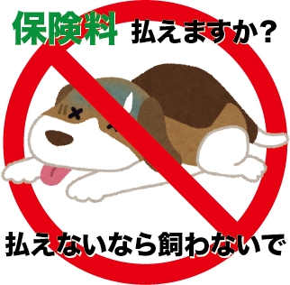

5月:オプティカルイリュージョン
プロジェクト概要
興味のある社会問題について、錯視効果を取り入れたポスターを制作し、note記事にまとめる。
成果物
プロジェクトの感想
福島原発事故の偏見についてポスターを制作しました。 福島原発の処理水をめぐり、今でも風評被害が多く存在することを知りいました。 これからの時代何が正しいのかを見分ける力が必要になると感じました。
6月:未来型予防医学
プロジェクト概要
現在-2,3年で実現しそうな未来型の予防医学に関する企画をGoogleドキュメント1ページにまとめてプレゼンをする。
成果物
プロジェクトの感想
ちゃんとした発表はこのプロジェクトが初めてでした。 初めての発表としては上手くできていたように感じましたが、それ以上に改善点の多い発表でした。悔しかったです。
9月:身近な日用品で防災
プロジェクト概要
新聞紙や輪ゴム、段ボールやポリ袋など、身近な日用品を使って災害時に避難所で役立つアイテムを考え制作するプロジェクト。
成果物
プロジェクトの感想
最初は今までにないアイデアを出そうと思い、いろんなことを考えましたが結局何も思い浮かばず無難なまくらを制作しました。悔しい...
2月:ステッカーでペット問題を発信
プロジェクト概要
ペットに関する社会問題を調べ、それに関するスッテカーをデザインする
成果物

プロジェクトの感想
ペットの飼育放棄の現状やペットの保険などこのプロジェクトがなければ一生知らなかったようなことがたくさん知ることができました。